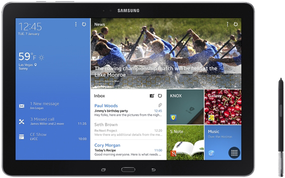

삼성 갤럭시 노트 프로 12.2
1. 외관

삼성전자가 2014년 1월, CES 2014에서 공개한 안드로이드 태블릿 컴퓨터.
2. 사양
| 프로세서 | 삼성 엑시노스 5420 SoC. ARM big.LITTLE↓, ARM Mali-T628 MP6 -- MHz GPU | ||
| 메모리 | 3 GB LPDDR3 SDRAM, 32 / 64 GB 내장 메모리, micro SDXC (최대 64 GB 지원) | ||
| 디스플레이 |
12.2인치 WQXGA(2560 x 1600) RG-BW 펜타일 서브픽셀 방식의 삼성D Super Clear LCD 멀티터치 지원 정전식 터치 스크린 |
||
| 네트워크 | 기본 | LTE Cat.4, TD-LTE, HSPA+ 42Mbps, HSDPA & HSUPA & UMTS, TD-SCDMA, GSM & EDGE | Wi-Fi 802.11a/b/g/n/ac, 블루투스 4.0, NFC |
| - | - | ||
| 카메라 | 전면 200만 화소, 후면 800만 화소 AF 및 LED 플래시 | ||
| 배터리 | 내장형 Li-Ion 9500 mAh | ||
| 운영체제 | 안드로이드 4.4 (KitKat) | ||
| 규격 | 1204 x 295.6 x 7.95 mm, 750 g (Wi-Fi 모델) / 753 g (셀룰러 모델) | ||
3. 상세
삼성전자에서 최초로 출시한 12.2인치 디스플레이를 가진 태블릿 컴퓨터이다. 전반적인 사양은 갤럭시 노트 10.1 2014 에디션과 거의 유사하며 동시에 공개된 갤럭시 탭 PRO 12.2와 동일하다.
제품 두께는 7.95 mm로 얇지만 디스플레이 크기가 12.2인치인 만큼 무게가 700 g을 넘어서 무거운 편에 속한다. 거기에 S펜 관련 하드웨어 부품도 추가되었기 때문에 갤럭시 탭 PRO 12.2와 제품 규격 자체는 동일하지만 무게는 20 g정도 더 무겁다.